7 HARJOITUS 1.6: RASTERIAINEISTOT
Harjoituksen sisältö
Harjoituksessa lisätään rasteriaineistoja GeoServer-palvelimelle ja muokataan tason asetuksia WCS-palvelun julkistamista varten.
Harjoituksen tavoite
Harjoituksen jälkeen opiskelija osaa lisätä rasteriaineistoja ja tehdä välttämättömät asetukset aineiston julkaisemiseksi.
Arvioitu kesto
40 minuuttia.
7.1 Valmistautuminen
Aiemmissa harjoituksissa on luotu helsinki-workspace, joihin on määritelty muun muassa vesileima näkyväksi.
GeoServerin palvelimen aineistohakemistoon on valmiiksi ladattu muutama rasteriaineisto: yksi korkeusmalli ja neljä ilmakuvaa Helsingin alueelta.
7.2 Rasteriaineiston lisääminen
Rasteriaineiston lisääminen GeoServeriin tapahtuu melko samalla tavalla kun aiemmissa harjoituksissa vektoriaineistojen kanssa. Ladataan nyt GeoServeriin käytettäväksi rasteriaineisto, jonka alkuperäinen formaatti on ArcGrid (ASCII-pohjainen rasteriformaatti). Rasteriaineisto on Maanmittauslaitoksen korkeusmalli Helsingin alueelta (ruutukoolla 2 m x 2 m).
Ensin meidän pitää luoda viitereferenssi aineistoon, jotta GeoServer tietäisi, missä aineisto sijaitsee fyysisesti. Muista, että tämä tapahtuu luomalla storeja.
Luo uusi store valitsemalla Stores → Add new Store. Paina sitten ArcGrid storen formaatiksi.
Valitse taas helsinki-workspace ja nimeä uusi store: hki_korkeusmalli_L4133A.
Selaa sitten kansioon /koulutus/korkeusmalli_2m/ ja valitse tiedosto L4133A.asc.
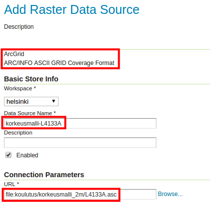
Paina sitten Save ja sen jälkeen Publish.
Kuten aiemmin vektoriaineistojen luomisen yhteydessä, pääset nyt tason editointinäkymään. Tarkista yleisasetukset niin, että sekä Enabled että Advertised ovat valittuna.
Laita nimeksi korkeusmalli ja otsikoksi Helsingin korkeusmalli ja lisätiedoksi Korkeusmalli 2m – Maanmittauslaitos. 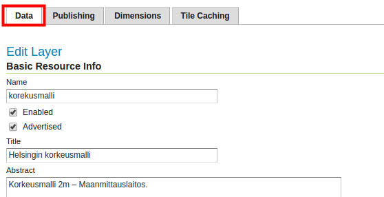
Huomaa, että Coordinate Reference Systems -kohdassa, koordinaattijärjestelmä on määritelty väärin. Aineiston oikea järjestelmä on ETRS89 / ETRS-TM35FIN (EPSG:3067). Korjaa sitä käsin Declared SRS -kentässä ja valitse SRS handling kentästä Force declared. Käytä sen jälkeen pikalinkkejä määrittääksesi aineiston laajuuden.

Paina sitten Save.
Tarkista, että taso on Data → Layers-taulussa. Voit esikatsella uutta rasteritasoa Data → Layer Preview -ikkunan kautta.

7.3 Ilmakuvan lisääminen
Samalla tavalla kun lisäsit edellisessä kohdassa ArcGrid-tiedoston voit lisätä GeoTIFF-aineistoja.
Seuraa edellisen kohdan ohjeita ja lisää samalta alueelta ilmakuva. GeoTIFF-tiedosto löytyy täältä: /koulutus/ilmakuvat_geotiff/L4133A.tif.
Nimeä seuraavasti:
store: hki_ilmakuva
taso: ilmakuva
Ilmakuva esikatselussa: 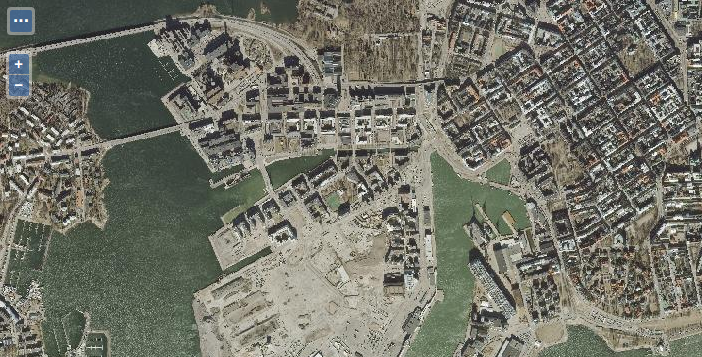
7.4 Image Mosaic
GeoServerin avulla voi julkaista useita rasteriaineistoja (esim. GeoTIFF-tiedostoja) yhtenä WMS-palveluna käyttämällä Image mosaic -formaattia.
Mosaiikin muodostaminen vaatii, että kaikki aineistot ovat samassa kansiossa ja tiedostoformaatissa sekä samassa koordinaattijärjestelmässä. Rasteriformaatti tulee olla tuettuna GeoServerissä, esim. GeoTIFF tai ArcGrid.
Tämä storen tyyppi on tarkoitettu käytettäväksi samantyyppisten rasteriaineistojen kanssa. Esimerkiksi useita ilmakuvia, jotka muodostavat mosaiikin suositellaan julkaistavaksi kyseisellä tavalla välttäen tasokohtaista julkaisemista.
Edellisen ilmakuvan kansiossa on muutamia ilmakuvia Helsingistä. Aineisto on ladattu Maanmittauslaitoksen aineistopalvelusta. Ne ovat GeoTIFF-formaatissa ja TM35FIN-koordinaattijärjestelmässä (EPSG:3067). Kuten nähdään kyseinen aineisto täyttää kaikki mosaiikin muodostamiseen vaatimukset.
Luo uusi store helsinki workspaceen. Valitse formaatiksi ImageMosaic - Image mosaicking plugin.
Selaa kansioon /koulutus/ilmakuvat_geotiff/ ja paina OK. Täten, kaikki kuvat kansiossa yhdistetään yhteen ja mosaiikkia käsitellään sen jälkeen yhtenä tasona.
Anna nimi ja selitys esimerkiksi seuraavan kuvan mukaisella tavalla: 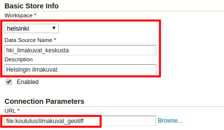
Paina sitten Save ja sen jälkeen julkista taso painamalla Publish.
Laita tason nimeksi ilmakuvat_keskusta ja otsikoksi Helsingin keskustan ilmakuvat. Lisätiedoksi voit kirjoittaa esimerkiksi Helsingin ilmakuvat - Maanmittauslaitos 2014. Tarkista tason editointinäkymästä, että Enabled ja Advertised ovat rastitettuna. 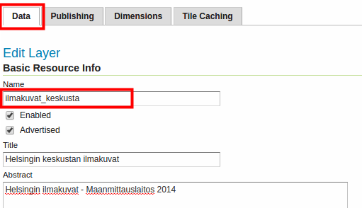
Huomaa, että GeoTIFF-tiedoston koordinaattijärjestelmän tiedot (EPSG:3067) ja aineiston laajuus on tässä määrittynyt oikein automaattisesti (oletusarvojen mukaisesti).

Psst! Kuten aiemmin mainittiin, GeoServer pyrkii tulkitsemaan alkuperäisen aineiston koordinaattijärjestelmän alkuperäisistä tiedoista, joka tässä tapauksessa oli EPSG-muodossa.
Paina lopuksi Save.
Tarkista, että uusi taso löytyy Data → Layers -näkymältä. Voit myös esikatsella sitä tuttuun tapaan käyttäen Data → Layers Preview.

7.5 Layer Groups
GeoServerin tasoja ja/tai aiemmin luotuja tasoryhmiä voidaan ryhmittää. Tasoryhmissä voi yhdistää eri vektori- ja rasteriformaatteja. Yksi selkeä käyttötapaus on taustakartan julkaiseminen yhtenä WMS-tasopalveluna.
Luodaan nyt tasoryhmä käyttäen aiemmin palvelimelle lisättyjä ilmakuvat_keskusta-, rakennukset- ja tiesto-tasoja.
Valitse päävalikosta Data → Layer Groups ja sitten Add new layer group.
Laita ryhmätason nimeksi taustakartta ja otsikoksi Helsingin taustakartta. Lisää Abstract kentälle "Helsingin keskustan taustakartta".
Psst! Joissain selaimissa ääkkösten käyttö ei välttämättä onnistu. Vältä ääkkösten käyttöä tasojen nimissä ja otsikoissa.
Valitse helsinki workspace:ksi.
Selaa sivua alaspäin, paina Add Layer… ja lisää ilmakuvat_keskusta-taso. Taso on nyt lisätty Layers-listalle.
Paina Generate Bounds ja huomaa, kuinka tason alkuperäinen koordinaatistojärjestelmä ja laajuus on nyt määritettynä niille kuuluvissa kentissä. Pidetään ryhmätason järjestelmänä ETRS89 / TM35FIN.

Lisää samalla tavalla Helsingin rakennukset- ja tiesto-tasot.
Huomaa, että voit järjestää tasot käyttämällä Drawing order -nuolia. Ylempänä oleva (sija 1) piirretään ensimmäiseksi; sen päälle piirretään seuraava taso, ja niin edelleen. Järjestele tasot tämän kuvan mukaan:
Varmista, että Default Style ovat rastittuina.
Paina lopulta uudelleen Generate Bounds päivittämään ryhmätason laajuustiedot, jotta myös uudet aineistot otetaan huomioon laajuustietojen määrittämisessä. Aina kun lisäät uutta aineistoa tasoryhmään tulisi painaa uudelleen Generate Bounds päivittääksesi ryhmätason laajuustiedot.
Paina vielä Save.
Voit esikatsella ryhmätasoa samalla tavalla kuin muitakin tasoja:
 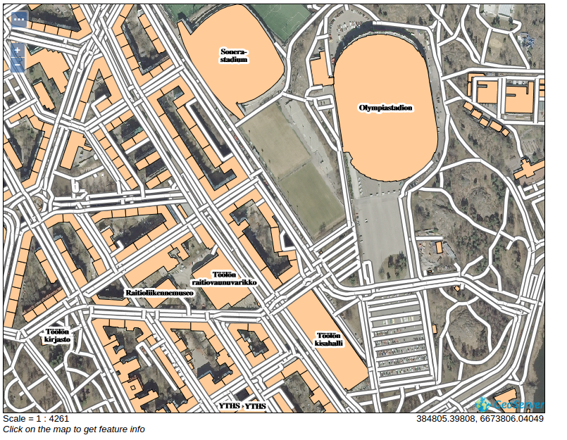
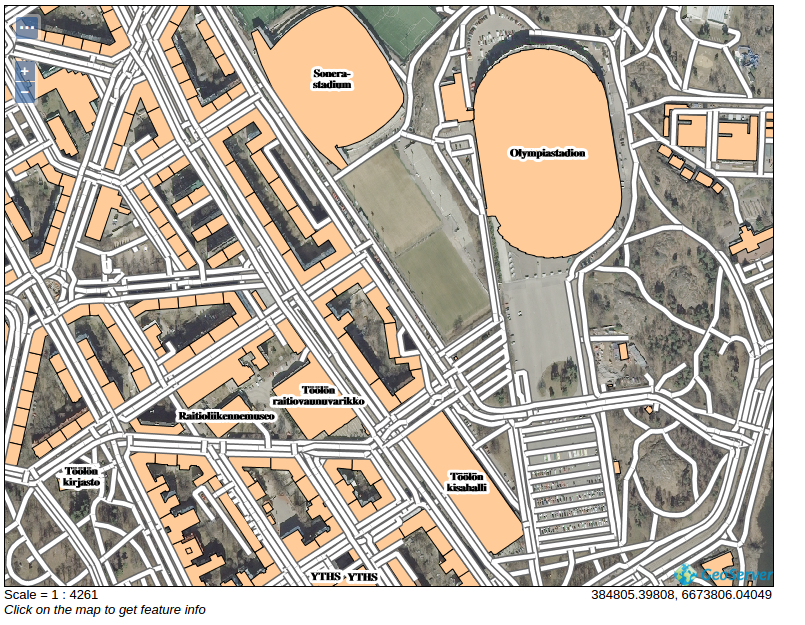
7.5.1 Ryhmätasojen julkaisemisen muoto
Palaa ryhmätason asetuksiin (Data → Layer Groups → taustakartta). Selaa alaspäin Mode-kohdalle asti. Tässä kohdassa voit valita erilaisia muotoja ryhmätason tasoille:
Single-ryhmätaso on nähtävissä yhtenä tasona, lähtötasoja ei voi erotella toisistaan
Named Tree -ryhmätaso on nähtävissä ryhmänä ja yksittäisinä tasoina
Container Tree -ryhmätaso on nähtävissä ainoastaan yksittäisinä tasoina
Earth Observation Tree -ryhmätaso on tarkoitettu Earth Observation -aineistoa varten ja se on nähtävissä vain ryhmätason esikatselunäkymässä
Pidä oletus Single valittuna. Se asettaa WMS-tasot näkyville yhtenä tasona.
Pidä loput asetukset oletuksina ja paina lopuksi Save. Ryhmätasoja voidaan esikatsella samalla tavalla kuin muita tasoja. Mene Layer Preview -näkymään ja avaa uuden ryhmätason esikatselutila OpenLayers-linkin avulla. Huomaa, että oletuskuvaustekniikka on käytössä. Tämän ryhmätason kuvaustekniikkaa parannetaan vielä myöhemmin.
Kun olet saanut ryhmätason valmiiksi, voit palata ryhmätason asetuksiin ja kokeilla muita Mode-asetuksia. Seuraavat esimerkkikuvat ovat QGISin WMS-palvelun työkalusta. .
Mode → Single näyttää tältä: 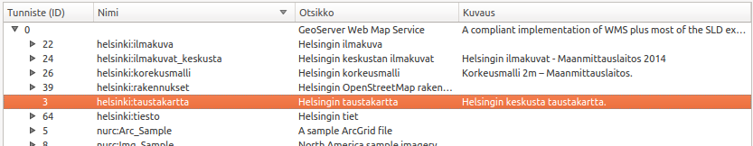
Tässä muodossa koko ryhmätaso on aina ladattavissa yhtenä pakettina, eikä sen alitasoista ole saatavilla tietoa erikseen tai niitä voida ladata erikseen.
Kun taas Mode → Named Tree näyttää tältä: 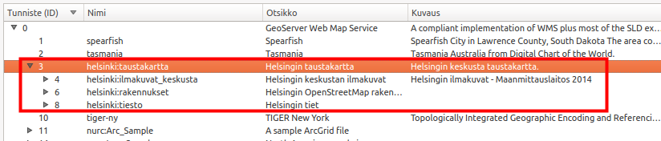
Tässä muodossa on mahdollista ladata tasoja yksitellen.
7.5.2 Muiden WMS-palvelujen hyödyntäminen (cascading WMS)
Rasteriaineisto voi olla peräisin myös muista WMS-palveluista. Tätä kutsutaan englanniksi cascading-tyyppiseksi ratkaisuksi. Käytännössä voidaan ketjuttaa WMS-tasoja toisista palveluista siten, että loppukäyttäjä ei huomaa eroa. Ketjuttaminen mahdollistaa esimerkiksi muiden paikkatietopalvelujen käytön GeoServeristämme. Heikkona puolena on se, että pitkistä ketjutuksista voi syntyä tilanne, jossa palvelun käytettävyys (vasteaika ja saatavuus) huononee oleellisesti.
Lisää uusi store (Data → Stores → Add new Store), valitse WMS-listalta.

Lisätään Helsingin kaupungin avoimet paikkatietopalvelut GeoServeriimme uudeksi WMS-yhteydeksi (remote WMS connection). Kyseinen Helsingin kaupungin palvelu löytyy osoitteesta:
Täytä tiedot seuraavan kuvan mukaisesti, laita yllä oleva osoite Capabilities URL -kenttään: 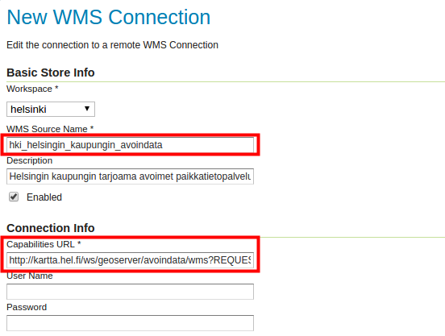
Loput asetukset voit jättää oletuksiin. Paina sitten Save.
Seuraavasti voit julkaista tasoja suoraan siitä palvelusta. Julkaise esimerkiksi Ajantasa_asemakaava. 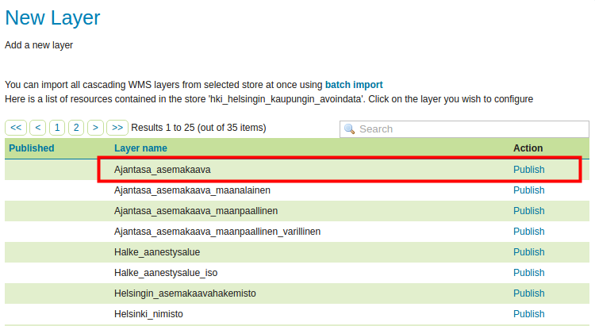
Uuden tason oletusasetukset ovat oikein. Selaa sivun loppuun ja paina Save.
Voit nyt esikatsella uutta tasoa samalla tavalla kuin aiemmin:

Psst! Huomaa, että WMS-cascade-tasojen tyyliin tai sisältöön ei voida vaikuttaa, sillä ne ovat Helsingin kaupungin omassa palvelimessa. Helsingin kaupungin paikkatietopalvelujen metatietoihin voit tutustua tässä: http://ptp.hel.fi/avoindata/aineistot/Aineistolista_wms_avoindata_ulkoverkko.html.